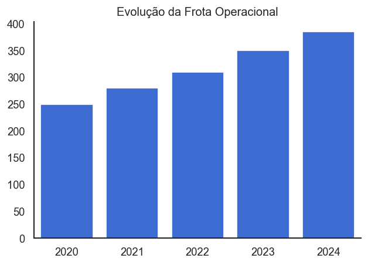
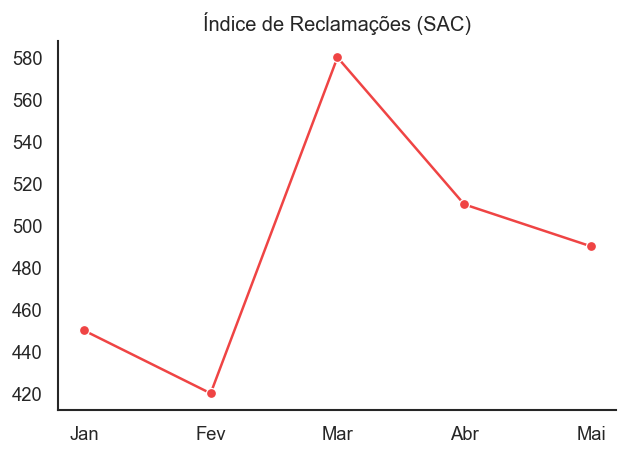
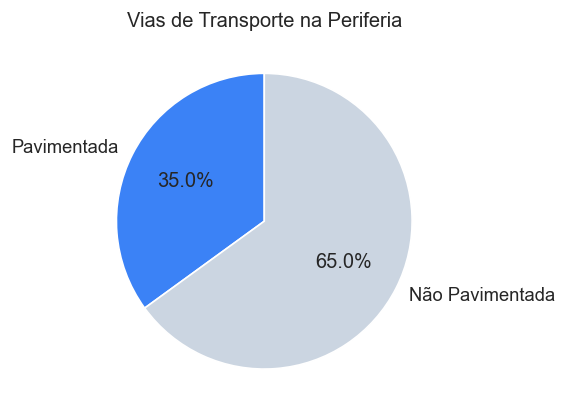
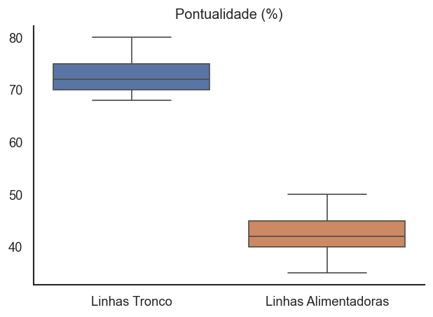
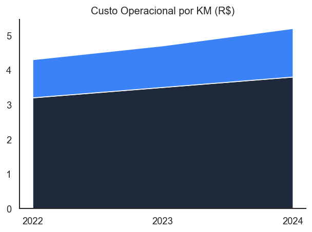

Integrantes: Erilin Sabrina, Emilly Gabriely, Juarez, Flavia Arruda
"O Abismo entre o CEP e a Cidadania"
Análise de dados reais (Cuiabá 2024) cruzando a oferta de transporte com a exclusão territorial periférica.





"Mobilidade urbana de Cuiabá ganhou 144 novos ônibus e 60% da frota tem ar-condicionado" [61]
Áreas de exclusão mapeadas vs. Densidade populacional (Censo 2022)
Conceito: A transparência ativa é a obrigação de divulgar informações espontaneamente. Accountability é o dever de prestar contas e a responsabilização.
[1] Transparência e accountability na administração públicaO bairro periférico não tem acesso às informações sobre a verba federal de "Modernização Urbana".
Violação Legal: Descumprimento da LAI (Lei nº 12.527/2011) e princípios constitucionais da publicidade [6].
Governança é o conjunto de mecanismos de liderança e estratégia para avaliar e monitorar a gestão [39].
Inexistência de unidade de controle interno acompanhando a verba federal, gerando risco de desvio para áreas nobres.
Criar Comitê com prefeitura, Ministério Público e moradores. Auditorias mensais na aplicação dos recursos.
Compreende as etapas de: formulação, implementação, monitoramento e avaliação [11].
O recurso existe, mas a implementação trava devido a dados desatualizados. O bairro permanece "invisível".
Realizar censo socioeconômico com georreferenciamento e integração entre as secretarias (SIG).
Participação deriva de uma cidadania ativa, definindo quem é incluído na comunidade política [17].
Implementar o Orçamento Participativo Digital e o Conselho Local de Transporte com moradores.
"O orçamento participativo é um dos mecanismos de cocriação" [18]